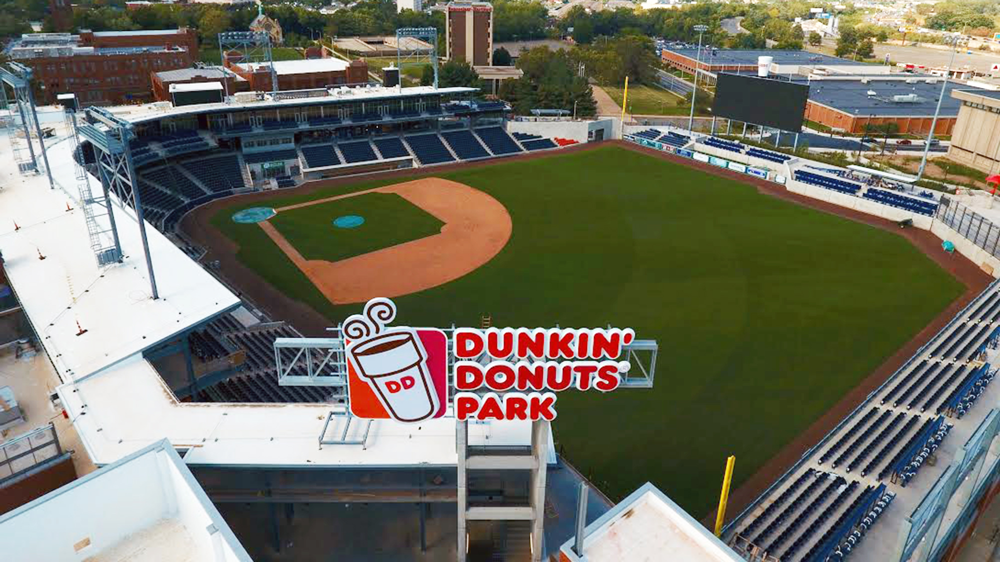

Find your Vibe in Hartford

Take a Stroll Down Pratt St.
From pregame to after-party and every occasion in between, Pratt Street holds the events and hosts the local purveyors that create a perfect experience for all of the block’s visitors.
Learn some history at the State Capitol
Overlooking Hartford's 41 acre Bushnell Memorial Park, the Connecticut State Capitol first opened for the General Assembly in January, 1879.

Grab a Pint and Watch the Hartford Yard Goats
Hartford's Double-A minor Eastern League Affiliate of the Colorado Rockies baseball team play in the state-of-the-art stadium at Dunkin Donuts Park.